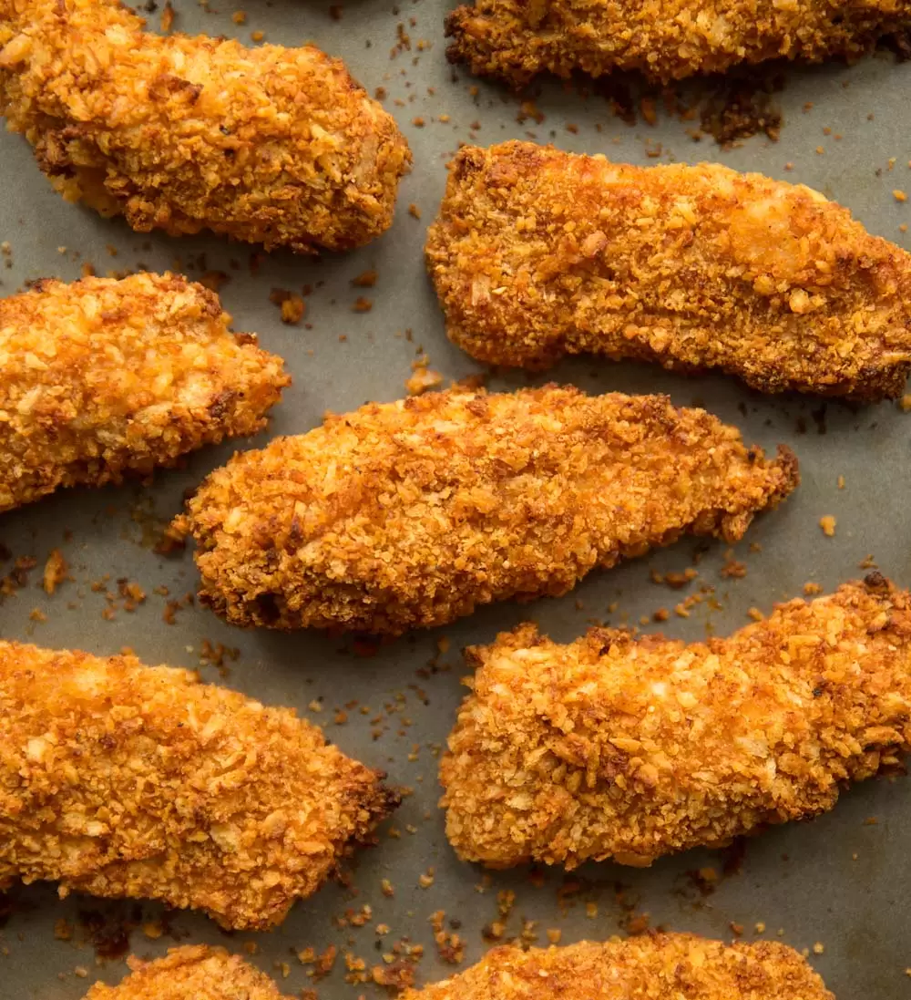

Oven Baked Chicken
How to Make Oven Baked Chicken!
Instructions
Step 1 - Gather Ingredients
- 1 - 2 cups Buttermilk
- 1/4 - 1/2 cup Frank's Buffalo Wing Sauce
- 8 Boneless and Skinless Chicken thighs
- 1 cup of flour
- 1 tsp garlic powder
- 1 tsp of onion powder
- 1 tsp smokey paprika
- 1/2 tsp cayenne
- 1 Tbl Baking Powder (not soda)
text-align:center;
Step 2 - Prepare the Chicken
- Mix buttermilk and Franks in a bowl.
- Marinate chicken thighs in buttermilk and Franks overnight.
- Preheat oven to 375o F.
- Mix the dry ingredients together in a bowl.
- Prepare baking sheet with cookie cooling rack with a baking sheet underneath.
- Coat the cookie rack with non-stick spray.
- Take a piece of chicken out of the marinate and allow the excess marinate to drain off.
- Dredge chicken in breading mixture then set the chicken on the baking sheet.
- Repeat steps 7 and 8 for the remaining pieces of chicken.
Step 3 - Bake and enjoy!
Bake for 15 minutes - The chicken is done when it reaches 165 o F in the thickest part of the chicken.

Learn more about baked chicken recipes!
Here is a link to a recipe that is pretty close to my moms original recipe. Baked Chicken Recipe